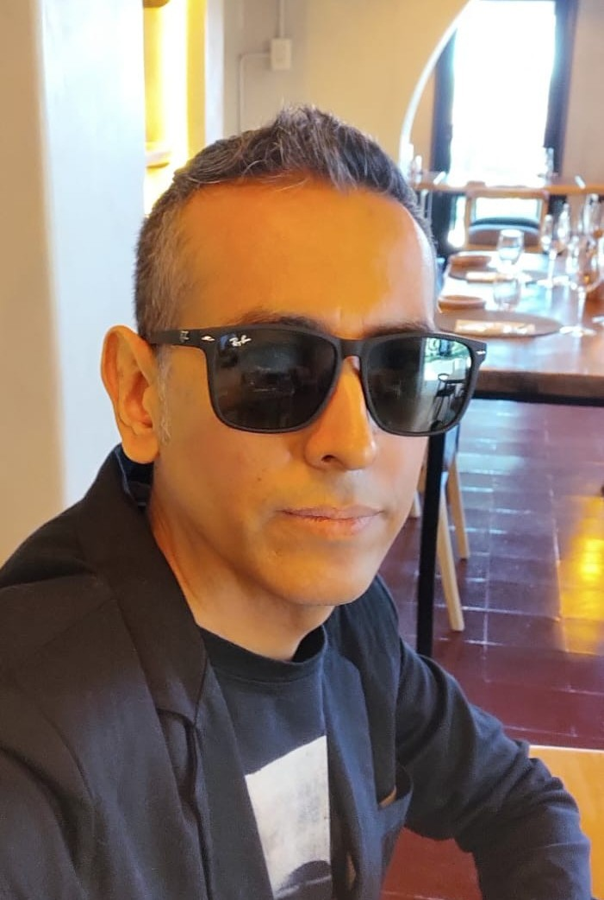
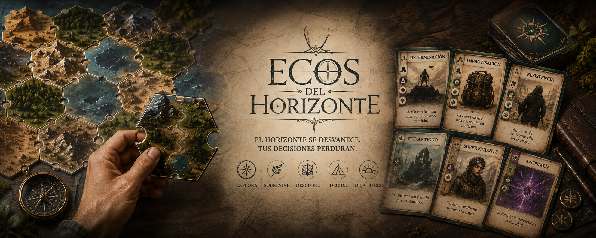

Jazz
Proyecto orientado al jazz y a la exploración musical.
DESARROLLO DE SOFTWARE · MÚSICO
Siempre me interesó la tecnología y la programación. Actualmente me estoy formando en desarrollo de software, combinando mis conocimientos técnicos con mi experiencia y creatividad como músico.
Ver mis proyectos
Soy estudiante de Desarrollo de Software y cuento con formación en Full Stack. Mi objetivo es seguir creciendo en el mundo de la programación y transformar mis conocimientos en proyectos reales.
A lo largo de mi formación trabajé con tecnologías como HTML, CSS, JavaScript, Python, C#, SQL y bases de datos.
Actualmente continúo mi formación en la Tecnicatura en Desarrollo de Software, cursando el cuarto cuatrimestre de la carrera, el penúltimo de mi formación académica. Mi objetivo es seguir incorporando conocimientos y comenzar a desarrollarme profesionalmente en el sector tecnológico.
Además de mi formación en tecnología, soy músico y cuento con una amplia trayectoria profesional. He realizado giras internacionales y tuve la oportunidad de presentarme en más de 20 países, una experiencia que me permitió desarrollar creatividad, disciplina, adaptación y capacidad para trabajar en distintos entornos y con diferentes equipos.
Giras internacionales en más de 20 países
La música continúa siendo una parte fundamental de mi vida profesional. Actualmente participo en diferentes proyectos musicales, continúo realizando presentaciones en vivo, giras, y también doy clases particulares de batería.
Proyecto orientado al jazz y a la exploración musical.
Proyecto que combina diferentes influencias contemporáneas.
Proyecto vinculado a la escena hardcore y a la cultura Straight Edge.
Proyecto musical dentro del ámbito del sludge metal.
Además del desarrollo de software, disfruto de actividades que combinan creatividad, estrategia y resolución de problemas.
Los juegos de mesa forman parte de mis principales intereses, especialmente aquellos que combinan estrategia, exploración y toma de decisiones.
Disfruto de los videojuegos como espacio de entretenimiento, exploración y descubrimiento de nuevas formas de interacción.
También disfruto de actividades como correr y caminar, buscando mantenerme activo y despejar la mente.
Actualmente estoy diseñando un ambicioso juego de mesa propio, trabajando en su sistema de juego, narrativa, exploración y experiencia para el jugador.
El respeto por la naturaleza y la vida animal ocupa un lugar fundamental en mi forma de entender el mundo. Soy vegano desde hace más de 25 años y me interesa especialmente el cuidado y la protección de los animales.

Proyecto académico orientado al análisis y desarrollo de una solución para la gestión de una clínica. Incluyó documentación de requerimientos, especificaciones, diseño de interfaz y prototipado.
HTML · CSS · Figma · UMLProyecto académico desarrollado con C# y MySQL, aplicando conceptos de programación orientada a objetos, modelado UML y gestión de bases de datos.
C# · MySQL · UMLLanding page desarrollada con HTML5 y CSS3 como proyecto individual de Front End, aplicando diseño responsive, estructura semántica y buenas prácticas de desarrollo web.
HTML5 · CSS3 · Git · GitHubSi querés conocer más sobre mi trabajo, mis proyectos o mi trayectoria, podés contactarme.